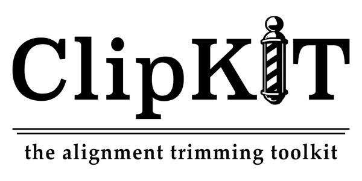
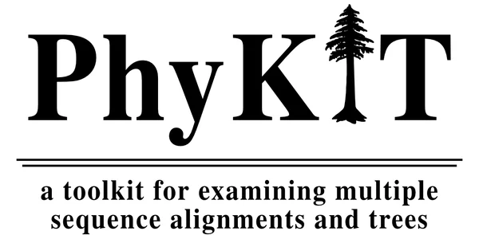
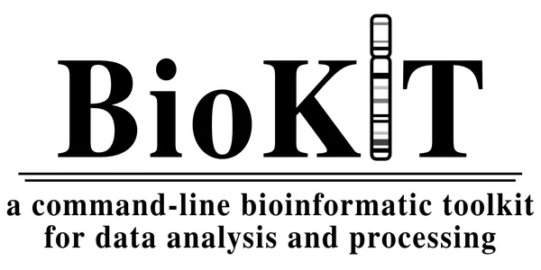
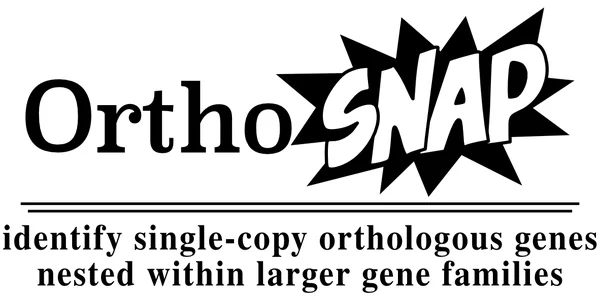
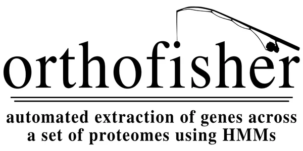
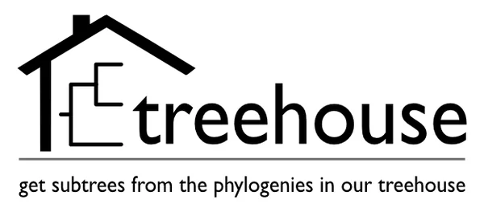
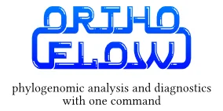
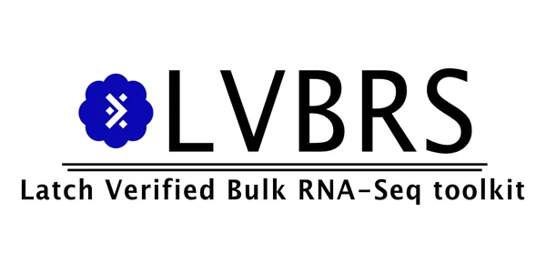

Software

Since the early 1990’s, there has been one predominant guiding light for multiple sequence alignment trimming -
the removal of phylogenetically uncertain sites defined as those that are highly divergent; however, the
efficacy of this approach has been called into question. ClipKIT implements an alternative strategy wherein
sites with phylogenetic certainty are retained and others are removed. Our benchmarking analyses show that
ClipKIT is a reliable and top performing software.
Run ClipKIT in the browser and leave the computing up to us!



Diverse disciplines in biology process and analyze multiple sequence alignments (MSAs) and phylogenetic trees to evaluate their information content, infer evolutionary events and processes, and predict gene function. However, automated processing of MSAs and trees remains a challenge due to the lack of a unified toolkit. To fill this gap, we introduce PhyKIT, a Swiss-army knife-like toolkit for processing and analyzing multiple sequence alignments and phylogenetic trees.



Bioinformatic workflows often rely on individual software to conduct single analyses, which makes maintaining workflows cumbersome and threatens reproducibility. To address this obstacle, we introduce BioKIT, a versatile toolkit that conducts diverse processing and analysis functions such as genome assembly quality assessment, alignment summary statistics, relative synonymous codon usage, codon optimization estimation, and more.


Orthologous gene groups provide a foundation for comparative genomics and phylogenomics, but sequence divergence can complicate their identification across distantly related organisms. OrthoHMM infers these groups using Hidden Markov Models parameterized from substitution matrices. This approach models sequence evolution to identify homologous relationships among protein sequences and organize genes into orthologous groups for downstream evolutionary analyses.



Molecular evolution studies such as phylogenomics and surveys of positive selection often strictly rely on single-copy orthologous genes (SC-OGs). To increase the number of molecular markers for use in molecular evolution studies, OrthoSNAP identifies subgroups of SC-OGs nested within larger gene families using a phylogenetically informed framework. The resulting SC-OGs are termed SNAP-OGs because they have been identified using a splitting and pruning procedure.



orthofisher conducts automated HMMsearches among a set of proteomes using a predetermined set of orthologs. Sequence similarity searches classify results as multi-copy, single-copy, or absent in a given genome. For the purposes of phylogenomics/phylogenetics, multi-fasta files are generated for all sequences as well as those that are single-copy; for gene family copy number determination, easily parsed output files contain absolute copy number of hits from the sequence similarity search.



Sometimes phylogenies are so large it is challenging to determine the relationships among a subset of taxa. To remedy this issue, treehouse, a user friendly GUI app, allows users to obtain subtrees from larger phylogenies. To obtain subtrees, upload a list of tip names in the desired subtree from an inputted phylogeny or a phylogeny from the treehouse database. Thereafter, users can download a pdf or newick file of the subtree of interest.

Creating publication ready figures can increases figure accessibility and improve science communication. Here, I present ggpubfigs, an R package with customized themes and colorblind friendly color palettes to help create publication (or presentation) ready figures. Please contact me if you would like to contribute a theme or color palette!

Software development led by other teams

Led by Heroen Verbruggen. The development, maintenance, and execution of phylogenomic workflows is challenging, requiring programming, data management skills, and familiarity with changing best practices. We introduce Orthoflow, a software wherein a single command automatically conducts end-to-end phylogenomic analysis using supermatrix and supertree methods from multiple input data formats. Orthoflow increases the accessibility of researchers to conduct rigorous phylogenomic analysis flexibly.


Led by Solu Genomics. Solu is a cloud-based platform for real-time genomic surveillance, addressing challenges in infrastructure, expertise, and data security. Designed for continuous integration of new sequencing data, it ensures user-friendly and privacy-focused operations, meeting healthcare providers’ needs. Solu’s also detects encoded antimicrobial resistance genes.

Led by LatchBio. Analysis of Bulk RNA-Seq data, differential expression analysis, and functional enrichment requires processing and handling diverse data types. The LVBRS toolkit (the Latch Verified Bulk RNA-Seq toolkit) conducts end-to-end analysis, differential expression, and functional enrichment analysis from raw reads from Bulk RNA-Sequencing experiments using a cloud-based framework. LVBRS enables researchers to focus on interpretation of biological data, not processing, file handling, data management, and resource allocation.